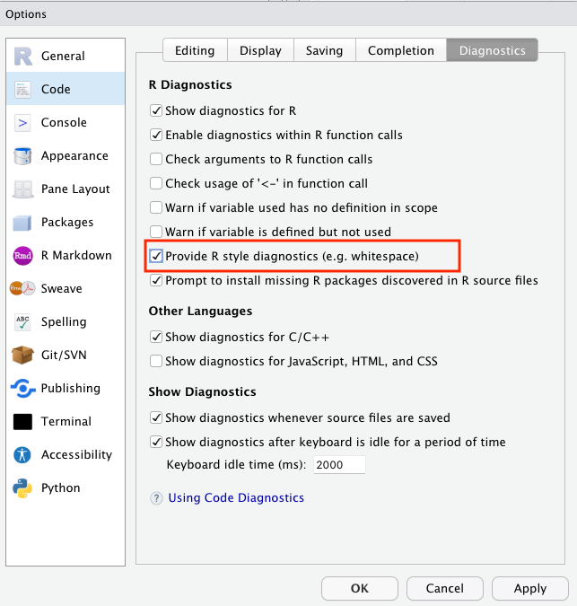
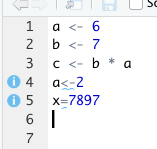
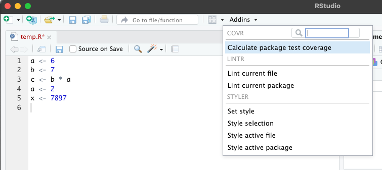

Defensive Programming
Contents
Defensive Programming#
In recent years, the social sciences have been struggling with a wave of papers that have turned out to have problems not because of problems of theory, or choice of statistical models, but rather because of simple programming errors. In perhaps the most embarassing, Steven Levitt (co-author of the acclaimed Freakonomics, and winner of one of the most prestigious awards in economics) had a paper about the political explosive (at least in the US) topic of abortion and crime that turned out to be wrong because he hadn’t put a set of controls into a regression he thought he had (may require sign-in, though I think you can see without paying). Moreover, as some of my own work has shown, the replication packages that come with a substantial number of political science papers have problems, often generating results that do not match those in the published paper.
In reading this, it’s natural to think that the reason we find problems in the code behind published papers is carelessness or inattention on behalf of authors, and that the key to minimizing problems in our code is to be more careful. The truth, I have come to believe, is more subtle: humans are effectively incapable of writing error-free code, and that if we wish to improve the quality of the code we write, we must start learning and teaching coding skills that help maximize the probability our mistakes will be found and corrected.
I myself once firmly believed the fallacy that the key to preventing errors was “to be more careful.” Indeed, I fear this belief may have colored the tone of of my past work on this subject in unproductive ways. Over the last several years, however, my research has brought me into close contact with computer scientists, and I discovered that computer scientists’ mentality about programming is fundamentally different from the mental model I had been carrying around as a social scientist. Computer scientists assume programmers will make mistakes, and instead of chiding people to “just be careful,” they have developed a battery of practices to address the problem. These practices – often referred to as “defensive programming” skills – are designed to (a) minimize the probability mistakes occur and (b) maximize the probability that mistakes that do occur are caught.
In this tutorial, we’ll cover a number of these defensive programming practices with an eye towards their application in the context of applied data science. I did not invent any of these practices, but you will likely find that the way I present them (and the use-cases I emphasize) will differ from most other presentations you will find online. That is because in this tutorial, I will focus on the type of applied data analysis common in the social sciences, natural science, or business analysis, rather than the type of “software engineering” applications where these methods are most commonly applied.
Style Matters#
Formatting isn’t just about aesthetics, they also make code easier to read. This not only helps other people read your code, but it will also help you recognize potential problems in our own code.
Here are a few rules of thumb for good code:
Use informative variable names. Don’t call something
var212if you can call itunemployment_percentage. Informative names require more typing, but they make your code so much easier to read. Moreover, including units in your variables names (percentage,km, etc.) can also help avoid confusion.Comment! Comments help in two ways. First, and most obviously, they make it easy to figure out what’s going on when you come back to code days, weeks, or months after it was originally written. And second, it forces you to think about what you’re doing in substantive terms (“This section calculates the share of people within each occupation who have college degrees”) rather than just in programming logic, which can help you catch substantive problems with code that may run without problems but will not actually generate the quantity of interest.
Use indentation. Indentation is a way of visually representing the logical structure of code – use it to your advantage!
Let your code breathe. In general, you should put a space between every operator in your code, and feel free to use empty lines. Space makes your code more readable, as illustrated in the following examples:
To illustrate, here’s some bad code for saving someone’s income and trying to compute after-tax income:
x<-20000
y<-x*0.23+1500
Here’s a much better version of the same code:
# Calculate impact of taxes on income
# Start with current income and policies
pre_tax_income <- 20000
tax_rate <- 0.23
tax_rebate <- 1500
# Calculate final after-tax income
after_tax_income <- (pre_tax_income * (1 - tax_rate)) + tax_rebate
These two blocks of code do exactly the same thing, but if you wrote them at 1am, guess which one you’d understand better the next morning?
You can find a full guide to R styling here, but if you use the tools below you won’t really need to read that to have well styled code.
Auto-Formatting Code in RStudio#
A really good way to ensure that your code has consistent formatting is to (a) set your editor to check for style problems, and (b) use a program that automatically formats your code. I love these tools, and thankfully RStudio has one built in! An auto-formatter won’t help ensure your variable names are descriptive, but it will ensure you use consistent spacing and indentation, which can be really helpful recognizing patterns and problems in your code.
To use this functionality in RStudio, we’ll do two things:
To have RStudio flag style violations:
First open your Global Options by going to the Tools menu and selecting Global Options....
Then, in these preferences, select Code on the left sidebar, then Diagnostics across the top across the window on the right, turn on “Provide R style diagnostics” and click Apply.

Now when you violate a style guideline – like not leave white space around assignment operators, you’ll see a blue squiggly warning, and a i button on the left you can mouse over for an explanation:

To have RStudio actively format your code:
First, install the styler package in R by running install.packages("styler") in an active R session.
Then click on the “Add-ons” menu over your editor and select “Style Active File” (note R may ask for permission to install some packages the first time you do this):

Adding Tests#
Tests are simple true-false statements users place in their code. A test checks for a certain condition (like whether the sample size in a regression is what you expect), and if the condition is not met, stops your code and alerts you to the problem.
Why do I need to always check things? I know my data!
In most of the exercises we’ve done in this boot camp, we’ve been using small data sets that are easy to just look at. In the real world of data science and computational social science, however, you will be working with data sets with hundreds of variables and tens of thousands of observation. So you can never really know your data – you only get to see bits and pieces through your analyses, plots, and summary statistics.
I like to think of working with data as being like exploring a dark cave. The documentation for the data is like an old dirty map of the cave system that in theory tells me the layout of the cave, but in reality is often out of date wasn’t drawn very carefully. I can never see the entire cave system, but I can’t turn on my flashlight and check to see if certain features match what I have on the map. If my map matches what I see, great! But sometimes the map won’t match what I see, and those are the situations where I’m really glad that I stop to turn on my flashlight and look around. Tests are a way of automating those types of checks.
Yeah, I always check that kind of stuff by hand when I’m writing my code. Why do I need to add tests?
The answer is four-fold:
Tests are executed every time your code is run. Most of us check things the first time we write a piece of code. But days, weeks, or months later, we may come back, modify code the occurs earlier in our code stream, and then just re-run the code. If those changes lead to problems in later files, we don’t know about them. If you have tests in place, then those early changes will result in an error in the later files, and you can track down the problem.
It gets you in the habit of always checking. Most of us only stop to check aspects of our data when we suspect problems. But if you become accustomed to writing a handful of tests at the bottom of every file – or after ever execution of a certain operation (I’m trying to always including them after a merge), we get into the habit of always stopping to think about what our data should look like.
Catch your problems faster. This is less about code integrity than sanity, but a great upside to tests is that they ensure that if a mistake slips into your code, you become aware of it quickly, making it easier to identify and fix the changes that caused the problem.
Tests catch more than anticipated problems. When problems emerge in code, they often manifest in lots of different ways. Duplicate observations, for example, will not only lead to inaccurate observation counts, but may also give rise to bizarre summary statistics, bad subsequent merges, etc. Thus adding tests not only guards against errors we’ve thought of, but may also guard against errors we don’t anticipate during the test writing process.
OK, but is this really necessary? YES.
Writing Tests#
In R, I recommend using the assertthat package for testing. Once installed, you just use assert_that() to test any logical statement:
library(assertthat)
x <- 7
y <- 5
# Make sure that x is greater than y
assert_that(x > y)
If the assertion is TRUE, the code continuous along happily. If it is not true, however, you get something like:
assert_that( x < y)
> ERROR: Error: x not less than y
> Error: x not less than y
> Traceback:
>
> 1. assert_that(x < y)
assert_that can also be used to test properties of vectors, though doing so requires one additional step.
Since logical tests applied to vectors return vectors, we have to specify how to evaluate that whole vector using any() (returns TRUE if any entries in the vector are TRUE) or all() (only returns TRUE if all the entries are TRUE). For example, if I don’t use these helpers, I get:
x <- c(1, 2, 3)
y <- c(4, 1, 3)
assert_that( x < y)
> ERROR: Error: assert_that: length of assertion is not 1
> Error: assert_that: length of assertion is not 1
> Traceback:
>
> 1. assert_that(x < y)
> 2. see_if(..., env = env, msg = msg)
> 3. check_result(res)
> 4. stop("assert_that: length of assertion is not 1", call. = FALSE)
So instead if I want to know if ALL entries of x are less than their matching entries in y, I can run:
x <- c(1, 2, 3)
y <- c(4, 1, 3)
assert_that(all(x < y))
And I’ll be told:
> ERROR: Error: Elements 2, 3 of x < y are not true
> Error: Elements 2, 3 of x < y are not true
> Traceback:
>
> 1. assert_that(all(x < y))
My contrast, if I only wanted to be sure that SOME of the entries of x were less than y, I could do:
assert_that(any(x < y))
Error: No elements of x < y are true
Traceback:
1. assert_that(any(x < y))
And we’d be good!
WARNING: Tests and Interactive Programming in R
One really important thing to know about: if you run an R file using the source command, an error will stop R in its tracks. But if you’re highlighting a block of code and sending it to R by typing “Command-Return” (with the standard R GUI text-editor or in RStudio) or clicking the Run button in RStudio, R will throw an error then keep going!
There is a weird work around available, but if you don’t want to use it, you need to either (a) watch your output, or (b) make sure to run your code using the source(file.R)command or by clicking the Source button in RStudio instead of the Run button.
To see, try the following code:
x <- 'test'
assert_that( is.numeric(x) )
print( 'hello world' )
If you run this interactively, you’ll see a red error message, but the print statement will still run. If you save this file and execute it with the source command / Source button, the print statement will never be run.
When Should I Write Tests?#
The best way to get into writing tests is to think about how you check your data interactively to make stuff work. After a merge or another complicated command, most people pause to browse the data and/or watch the code step by step, or do a set of quick tabs or plots. But these are not systematic, and you generally only do them once (when you’re first writing the code).
A great way to write tests is to think about what you’re looking for when you do these interactive tests and convert the logic of those interactive interrogations into systematic assert statements. That way they’ll be baked into your code, and will be executed every time your code runs!1
After merging data: No where are problems with data made more clear than in a merge. ALWAYS add tests after a merge! We’ll talk more about this in our reading on merging.
After complicated manipulations: If you have to think more than a little about how to get R to do something, there’s a chance you missed something. Add a test or two to make sure you did it right!
Before dropping observations: Dropping observations masks problems. Before you drop variables, add a test to, say, count the number of observations you expect to drop.
Common Test Examples#
Test number of observations is right:
# We'll use `countries` again:
country <- rep(c("USA", "China", "Sudan"), 3)
year <- c(1994, 1994, 1994, 1995, 1995, 1995, 1996, 1996, 1996)
gdp_pc <- round(runif(9, 1000, 20000))
countries <- data.frame(country, year, gdp_pc)
countries
| country | year | gdp_pc |
|---|---|---|
| <chr> | <dbl> | <dbl> |
| USA | 1994 | 16775 |
| China | 1994 | 13351 |
| Sudan | 1994 | 9909 |
| USA | 1995 | 11195 |
| China | 1995 | 3323 |
| Sudan | 1995 | 15216 |
| USA | 1996 | 6113 |
| China | 1996 | 2576 |
| Sudan | 1996 | 11927 |
assert_that(nrow(countries) == 9)
Check var that should have no missing has no missing.
Make sure values of GDP Per Capita have a reasonable value. Note this is a “reasonableness” test, not an absolute test. It’s possible this would fail and the data is ok, but this way if there’s a problem your attention will be flagged so you can check.
assert_that(all((1000 < countries$gdp_pc) & (countries$gdp_pc < 100000)))
Don’t Duplicate Information#
Tricks to minimize the probability of errors often require a little more sophisticated programming, so they won’t be for everyone (tests, I feel, are more accessible to everyone). Nevertheless, here’s another valuable practice: Never replicate information.
Information should only be expressed once in a file. For example, say you want to drop observations from a dataset if a person’s income has ever dropped below 20,000. You could do this like this:
df <- data.frame(income_2019 = c(10000, 20000, 30000, 40000, 50000),
income_2018= c(50000, 40000, 30000, 20000, 10000),
income_2017= c(50000, 20000, 30000, 40000, 50000))
df <- df[(df[, "income_2019"] < 20000) |
(df[, "income_2018"] < 20000) |
(df[, "income_2017"] < 20000),]
df
| income_2019 | income_2018 | income_2017 | |
|---|---|---|---|
| <dbl> | <dbl> | <dbl> | |
| 1 | 10000 | 50000 | 50000 |
| 5 | 50000 | 10000 | 50000 |
And indeed, this would work. But suppose you decided to change that cutoff from 20,000 to 30,000. The way this is written, you’ve opened yourself up to the possibility that in trying to change these cutoffs, you may change two of these but forget the third (something especially likely if the uses of the cutoff aren’t all in exactly the same place in your code). A better way of expressing this that avoids this possibility is:
df <- data.frame(income_2019 = c(10000, 20000, 30000, 40000, 50000),
income_2018 = c(50000, 40000, 30000, 20000, 10000),
income_2017 = c(50000, 20000, 30000, 40000, 50000))
income_threshold <- 20000
df <- df[(df[, "income_2019"] < income_threshold) |
(df[, "income_2018"] < income_threshold) |
(df[, "income_2017"] < income_threshold), ]
df
| income_2019 | income_2018 | income_2017 | |
|---|---|---|---|
| <dbl> | <dbl> | <dbl> | |
| 1 | 10000 | 50000 | 50000 |
| 5 | 50000 | 10000 | 50000 |
Written like this, if you ever decide to go back and change the common cutoff, you only have to make in one place, and there’s no way to make the change in some cases but forget others.
Never Transcribe#
We’ve already covered tricks to maximize the probability we catch our mistakes, but how do we minimize the probability they will occur? If there is anything I learned working as the Replication Assistant at the Quarterly Journal of Political Science testing people’s replication packages, it is that authors should never transcribe numbers from their statistical software into their papers by hand. This was easily the largest source of replication issues we encountered, as doing so introduced two types of errors:
Mis-transcriptions: Humans just aren’t built to transcribe dozens of numbers by hand reliably. If the error is in the last decimal place, it doesn’t mean much, but when a decimal point drifts or a negative sign is dropped, the results are often quite substantively important.
Failures to Update: We are constantly updating our code, and authors who hand transcribe their results often update their code and forget to update all of their results, leaving old results in their paper.
So, how do you avoid this problem? Use tools that will directly export your results into plain text or formatted tables you can use in the program where you are working, like stargazer in R.
I also suggest users not only do this for tables - which is increasingly common - but also statistics that appear in text. For example, to put a single number into \(\LaTeX\), you just generate the number you want to put in your paper, convert it to a string, and save it to disk as a .tex file (e.g. exported_statistic.tex). Then in your paper, simply add a \input{exported_statistic.tex}call, and LaTeX will insert the contents of that .tex file verbatim into your paper.